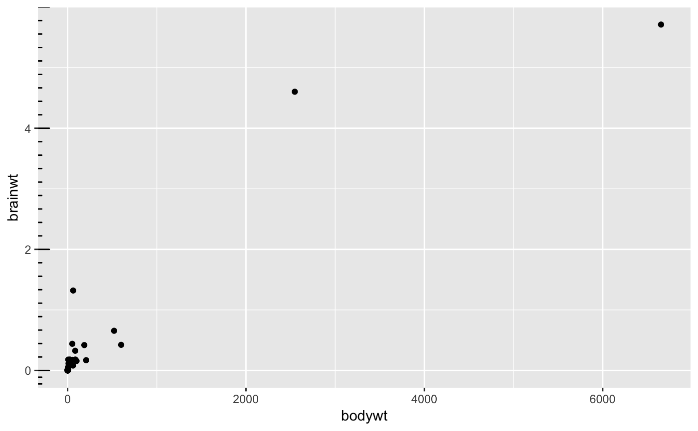
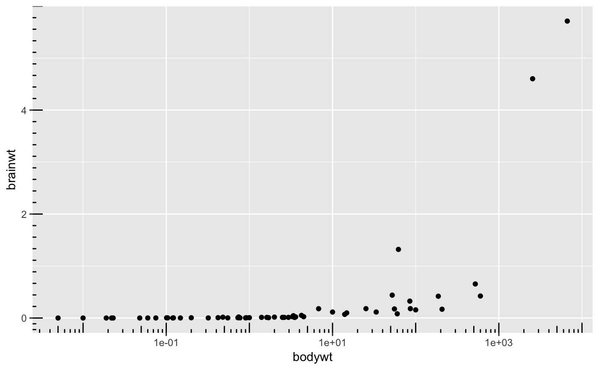
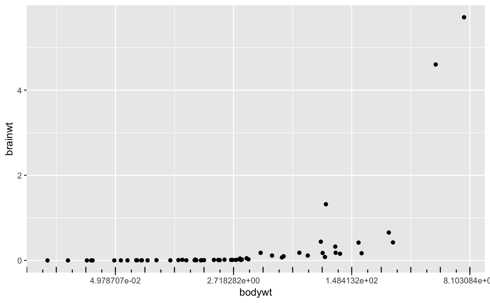
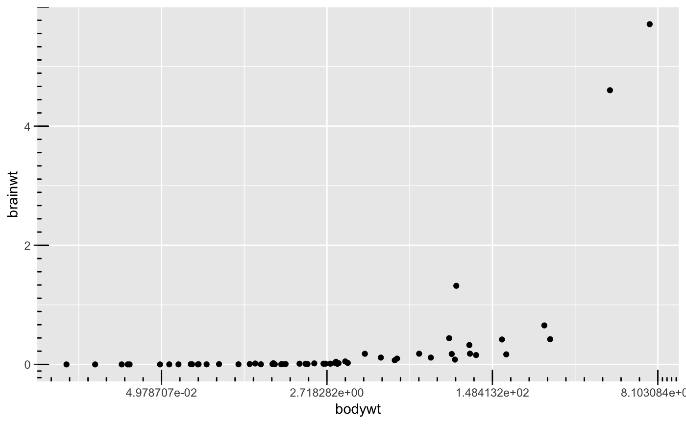

This annotation adds tick marks to an axis
annotation_ticks(sides = "b", scale = "identity", scaled = TRUE, short = unit(0.1, "cm"), mid = unit(0.2, "cm"), long = unit(0.3, "cm"), colour = "black", size = 0.5, linetype = 1, alpha = 1, color = NULL, ticks_per_base = NULL, ...)
| sides | a string that controls which sides of the plot the log ticks appear on.
It can be set to a string containing any of |
|---|---|
| scale | character, vector of type of scale attributed to each corresponding side, Default: 'identity' |
| scaled | is the data already log-scaled? This should be |
| short | a |
| mid | a |
| long | a |
| colour | Colour of the tick marks. |
| size | Thickness of tick marks, in mm. |
| linetype | Linetype of tick marks ( |
| alpha | The transparency of the tick marks. |
| color | An alias for |
| ticks_per_base | integer, number of minor ticks between each pair of major ticks, Default: NULL |
| ... | Other parameters passed on to the layer |
If scale is of length one it will be replicated to the number of sides given, but if the length of scale is larger than one it must match the number of sides given. If ticks_per_base is set to NULL the function infers the number of ticks per base to be the base of the scale - 1, for example log scale is base exp(1) and log10 and identity are base 10. If ticks_per_base is given it follows the same logic as scale.
p <- ggplot(msleep, aes(bodywt, brainwt)) + geom_point() # Default behavior # add identity scale minor ticks on y axis p + annotation_ticks(sides = 'l')#> Warning: Removed 27 rows containing missing values (geom_point).# add identity scale minor ticks on x,y axis p + annotation_ticks(sides = 'lb')#> Warning: Removed 27 rows containing missing values (geom_point).# Control number of minor ticks of each side independently # add identity scale minor ticks on x,y axis p + annotation_ticks(sides = 'lb', ticks_per_base = c(10,5))#> Warning: Removed 27 rows containing missing values (geom_point).# log10 scale p1 <- p + scale_x_log10() # add minor ticks on log10 scale p1 + annotation_ticks(sides = 'b', scale = 'log10')#> Warning: Removed 27 rows containing missing values (geom_point).# add minor ticks on both scales p1 + annotation_ticks(sides = 'lb', scale = c('identity','log10'))#> Warning: Removed 27 rows containing missing values (geom_point).# add minor ticks on both scales, but force x axis to be identity p1 + annotation_ticks(sides = 'lb', scale = 'identity')#> Warning: Removed 27 rows containing missing values (geom_point).# log scale p2 <- p + scale_x_continuous(trans = 'log') # add minor ticks on log scale p2 + annotation_ticks(sides = 'b', scale = 'log')#> Warning: Removed 27 rows containing missing values (geom_point).# add minor ticks on both scales p2 + annotation_ticks(sides = 'lb', scale = c('identity','log'))#> Warning: Removed 27 rows containing missing values (geom_point).# add minor ticks on both scales, but force x axis to be identity p2 + annotation_ticks(sides = 'lb', scale = 'identity')#> Warning: Removed 27 rows containing missing values (geom_point).